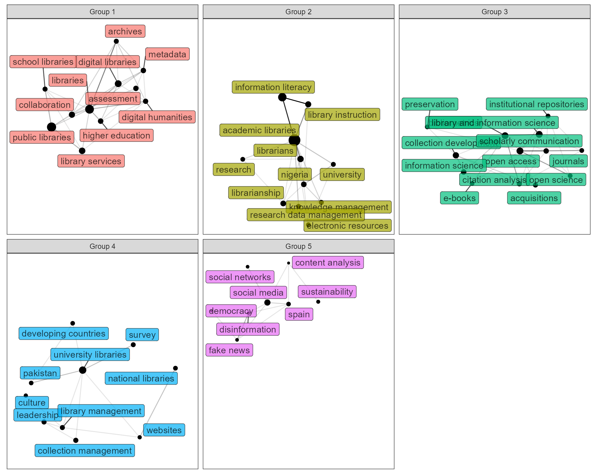

Automatic knowledge classification based on keyword co-occurrrence network
Hope (Huang Tian-Yuan)
Source:vignettes/akc_vignette.Rmd
akc_vignette.RmdIntroduction
Short for automatic knowledge classification, akc is an R package used to carry out keyword classification based on netword science (mainly community detection techniques), using bibliometric data. However, these provided functions are general, and could be extended to solve other tasks in text mining as well. Main functions are listed as below:
-
keyword_clean- Automatic keyword cleaning and transfer to tidy format -
keyword_extract- Extract keywords from raw text -
keyword_merge- Merge keywords that supposed to have same meanings -
keyword_group- Construct network from a tidy table and divide them into groups -
keyword_table- Display the table with different groups of keywords -
keyword_vis- Visualization of grouped keyword co-occurrence network
Features
Generally provides a tidy framework of data manipulation supported by dplyr, akc was written in data.table when necessary to guarantee the performance for big data analysis. Meanwhile, akc also utilizes the state-of-the-art text mining functions provided by stringr,tidytext,textstem and network analysis functions provided by igraph,tidygraph and ggraph. Pipe %>% has been exported from magrittr and could be used directly in akc.
Logo of akc package.
Example
Load package and inspect data
# load pakcage
library(akc)
library(dplyr)
#>
#> Attaching package: 'dplyr'
#> The following objects are masked from 'package:stats':
#>
#> filter, lag
#> The following objects are masked from 'package:base':
#>
#> intersect, setdiff, setequal, union
# inspect the built-in data
bibli_data_table
#> # A tibble: 1,448 x 4
#> id title keyword abstract
#> <int> <chr> <chr> <chr>
#> 1 1 Keeping the doors op~ Austerity; community~ English public librar~
#> 2 2 Comparison of Sloven~ Comparative libraria~ This paper aims to pr~
#> 3 3 Analysis of the fact~ Continuation will of~ This study aims to de~
#> 4 4 Redefining Library a~ Curriculum; educatio~ The purpose of this s~
#> 5 5 Can in-house use dat~ Check-out use; circu~ Libraries worldwide a~
#> 6 6 Practices of communi~ Community councillor~ The purpose of the re~
#> 7 7 Exploring Becoming, ~ Library and Informat~ "Professional identit~
#> 8 8 Predictors of burnou~ Emotional exhaustion~ Work stress and profe~
#> 9 9 The Roma and documen~ Academic libraries; ~ This paper explores t~
#> 10 10 Mediation effect of ~ Job performance; kno~ This paper proposes a~
#> # ... with 1,438 more rowsThe data set contains bibliometric data on topic of “academic library”,it is a data.frame of 4 columns(with docuent ID,article title,keyword and abstract), more information could be found via ?bibli_data_data.If the user want to carry out tasks by simply copying the example codes,make sure to arrange the data in the same format as biblio_data_table and set the same names for the corresponding columns.
Keyword cleaning
The entire cleaning processes include: 1.Split the text with separators; 2.Reomve the contents in the parentheses (including the parentheses); 3.Remove whitespaces from start and end of string and reduces repeated whitespaces inside a string; 4.Remove all the null character string and pure number sequences; 5.Convert all letters to lower case; 6.Lemmatization (not in default setting because it is not recommended unless you need a relatively rough result. For better merging, use keyword_merge displayed below).
bibli_data_table %>%
keyword_clean() -> clean_data
clean_data
#> # A tibble: 5,378 x 2
#> id keyword
#> <int> <chr>
#> 1 1 austerity
#> 2 1 community capacity
#> 3 1 library professional
#> 4 1 public libraries
#> 5 1 public service delivery
#> 6 1 volunteer relationship management
#> 7 1 volunteering
#> 8 2 comparative librarianship
#> 9 2 korea
#> 10 2 library legislation
#> # ... with 5,368 more rowsKeyword merging
Merge keywords that have common stem or lemma, and return the majority form of the word.
clean_data %>%
keyword_merge() -> merged_data
merged_data
#> # A tibble: 5,512 x 2
#> id keyword
#> <int> <chr>
#> 1 1163 10.7202/1063788ar
#> 2 619 18th century
#> 3 1154 1password
#> 4 81 1science
#> 5 361 second-career librarianship
#> 6 662 second life
#> 7 1424 2016 us presidential election
#> 8 42 21st-century skills
#> 9 1114 21st century skills
#> 10 1051 24-hour opening
#> # ... with 5,502 more rowsKeyword grouping
Create a tbl_graph(a class provided by tidygraph package) from the tidy table with document ID and keyword. Each entry(row) should contain only one keyword in the tidy format.
merged_data %>%
keyword_group() -> grouped_data
grouped_data
#> # A tbl_graph: 211 nodes and 1365 edges
#> #
#> # An undirected simple graph with 1 component
#> #
#> # Node Data: 211 x 3 (active)
#> name freq group
#> <chr> <int> <int>
#> 1 academic librarians 7 3
#> 2 academic libraries 145 3
#> 3 acquisitions 12 2
#> 4 africa 6 5
#> 5 altmetrics 7 2
#> 6 artificial intelligence 4 3
#> # ... with 205 more rows
#> #
#> # Edge Data: 1,365 x 3
#> from to n
#> <int> <int> <dbl>
#> 1 1 2 4
#> 2 2 3 2
#> 3 2 49 1
#> # ... with 1,362 more rowsOutput the table of results
The output table would show the top 10 keywords (by occurrence) and their frequency. Keywords are separated by “;”.
grouped_data %>%
keyword_table(top = 10)
#> # A tibble: 6 x 2
#> group `keywords(TOP 10)`
#> <int> <chr>
#> 1 1 public libraries(74);libraries(66);digital libraries(31);collabora~
#> 2 2 open access(32);bibliometrics(31);library and information science(~
#> 3 3 academic libraries(145);information literacy(58);library services(~
#> 4 4 university libraries(39);pakistan(9);digital preservation(6);infor~
#> 5 5 librarianship(18);knowledge management(12);research data managemen~
#> 6 6 national libraries(10);cataloguing(6);knowledge organization(6);re~Visualize the results
Keyword co-occurrence network in different groups. Colors are used to specify the groups, the size of nodes is proportional to the keyword frequency, while the alpha of edges is proportional to the co-occurrence relationship between keywords.

Keyword extraction from abstract
To extract keywords from the abstract using the keywords as a dictionary. More pre-processing filter should be implemented afterward, such as cleaning, keyword merging and filtering by term frequency or tf-idf. It is suggested to keep the size down before using keyword_group.
bibli_data_table %>%
keyword_clean(id = "id",keyword = "keyword") %>%
pull(keyword) %>%
make_dict -> my_dict
bibli_data_table %>%
keyword_extract(id = "id",text = "abstract",dict = my_dict) %>%
keyword_merge(keyword = "keyword")
#> # A tibble: 24,475 x 2
#> id keyword
#> <int> <chr>
#> 1 619 18th century
#> 2 1223 18th century
#> 3 1154 1password
#> 4 81 1science
#> 5 983 1science
#> 6 662 3d environment
#> 7 910 fourth museum assembly
#> 8 624 55th library week
#> 9 747 aasl standards
#> 10 284 aboriginal
#> # ... with 24,465 more rows